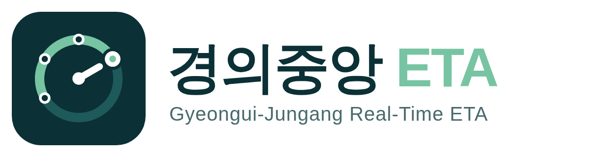
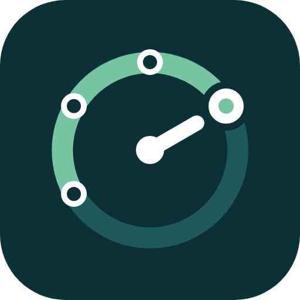

8:03
▂▄▆
상봉역
08:03:10 기준 · 서울특별시 공공데이터

용문 방면
문산 방면
용문행
K5123
약 5
분 후
예상 범위 4~7분 · 08:08 도착
평소보다 +2분
회기
회기→중랑
중랑
상봉
선행 열차 영향 가능성
덕소행
K5127
약 11
분 후
예상 범위 10~13분 · 08:14 도착
정상 운행
현재
왕십리
4
정거장 전
용문행
K5131
약 19
분 후
예상 범위 16~23분 · 08:22 도착
평소보다 +3분
현재
이촌
9
정거장 전
간선열차 운행 영향 가능성
역 도착
경로
열차
즐겨찾기
역 도착 화면
이 역에 언제 오나 · 예상 범위와 지연 표시
8:03
▂▄▆
K5123 용문행
08:03:10 기준 · 서울특별시 공공데이터
현재 위치
회기
→
중랑
평소보다 약 +2분
정상 대비 느리게 운행 중
회기
07:59 출발
운행 중
중랑
2분
1~3분
상봉
5분
4~7분
망우
7분
6~10분
양원
10분
8~13분
구리
12분
10~16분
지연 요인
선행 열차 영향
추정
+1분
역 정차 지연 (청량리)
관측
+1분
공식 발표가 없는 원인은 ‘추정’으로 표시합니다.
역 도착
경로
열차
즐겨찾기
열차 상세 화면
지금 어디 있나 · 역별 예상 도착 · 왜 늦나
8:03
▂▄▆
경로
지금 출발 기준 · 서울특별시 공공데이터
홍대입구
구리
⇅
실제 예상 소요시간
44
분
예상 도착
08:47
대기 3분
이동 35분
지연 6분
시간표 기준
38분
현재 추가 지연
+6분
탈 수 있는 열차
용문행 K5131
추천
08:06 탑승 · 3분 대기
44분
08:47 도착
덕소행 K5135
08:14 탑승 · 11분 대기
49분
08:52 도착
역 도착
경로
열차
즐겨찾기
경로 화면
지금 출발하면 실제로 얼마나 걸리나
화면 시안 · 표시된 시각과 수치는 예시입니다 · 실시간 정보 출처: 서울특별시 공공데이터